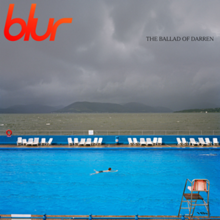
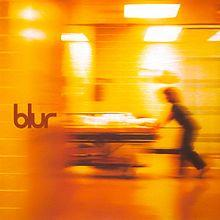
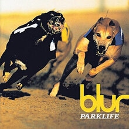
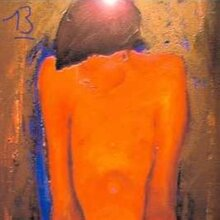

<!--2372036_Muhammad Sava Akbar Bastaman_B-->
<!DOCTYPE html>
<html lang="en">
<head>
    <meta charset="UTF-8">
    <meta name="viewport" content="width=device-width, initial-scale=1.0">
    <title>Blur</title>
    <link rel="stylesheet" href="styl.css">
    <link rel="stylesheet" href="style3.css">
    <link rel="preconnect" href="https://fonts.googleapis.com">
    <link rel='stylesheet' id='theme-font-awesome-css' href='//use.fontawesome.com/releases/v5.14.0/css/all.css' type='text/css' media='all' />
    <link rel="stylesheet" href="https://cdnjs.cloudflare.com/ajax/libs/font-awesome/4.7.0/css/font-awesome.min.css">
    <link rel="preconnect" href="https://fonts.gstatic.com" crossorigin>
    <link href="https://fonts.googleapis.com/css2?family=Abril+Fatface&family=Amiri:ital@1&family=Girassol&family=Titan+One&display=swap" rel="stylesheet">
    <link href="https://cdn.jsdelivr.net/npm/bootstrap@5.3.2/dist/css/bootstrap.min.css" rel="stylesheet" integrity="sha384-T3c6CoIi6uLrA9TneNEoa7RxnatzjcDSCmG1MXxSR1GAsXEV/Dwwykc2MPK8M2HN" crossorigin="anonymous">
</head>
<aside>
    <header style="background-color: aqua;">
    </header>
    <nav>
        <nav class="navbar navbar-expand-lg bg-secondary">
        <div class="container-fluid">
            
          <a class="navbar-brand" style="color:black" style="font-family: 'Amiri', serif;"> &nbsp;Bastaman</a>
          <button class="navbar-toggler" type="button" data-bs-toggle="collapse" data-bs-target="#navbarSupportedContent" aria-controls="navbarSupportedContent" aria-expanded="false" aria-label="Toggle navigation">
            <span class="navbar-toggler-icon"></span>
          </button>
          <div class="collapse navbar-collapse" id="navbarSupportedContent">
            <ul class="navbar-nav me-auto mb-2 mb-lg-0">
              <li class="nav-item">
                <a class="nav-link active" style="color:red" class="warnafontnav" aria-current="page" href="index.html">Home</a>
              </li>
              <li class="nav-item">
                <a class="nav-link" style="color:white" class="warnafontnav" href="#spotify">Albums and Spotify</a>
            </ul>
          </div>
        </div>
        </nav>
    </nav>
      <!--Navbar-->
      <main>
        <aside>
            <h1>Blur</h1><br><br>
            <p>
                Blur is an alternative rock band which formed in Colchester, England in 1989. The band consists of Damon Albarn (vocals, guitar, keyboards), Graham Coxon (guitar, vocals), Alex James (bass) and Dave Rowntree (drums). Blur’s debut album Leisure (1991) incorporated the sounds of Madchester and Shoegazing and spawned their first UK Top 10 single, There’s No Other Way. Following a stylistic change in 1992 (influenced by English guitar groups such as The Kinks, The Beatles, The Animals and XTC) Blur released “Popscene” as a stand alone single, this was a commercial flop, but was widely considered to be a crucial turning point for the band’s style. Following this, Blur released 3 studio albums in a similar style: Modern Life Is Rubbish (1993), Parklife (1994) and The Great Escape (1995). As a result, the band helped to popularise the Britpop genre and achieved mass popularity in the UK, aided by a famous chart battle with rival band Oasis dubbed “The Battle of Britpop”.<br><br>

                By the late 1990s, with the release of Blur (1997), the band underwent another reinvention, influenced by the lo-fi style of American indie rock bands such as Pavement; in the process, Blur finally gained mainstream success in the US with the single, “Song 2”. The last album featuring the band’s original lineup, 13 (1999) found Blur experimenting with electronic music and gospel music, as Albarn wrote more personal lyrics. In May 2002, Coxon left Blur during the recording of their seventh album Think Tank (2003). Containing electronic sounds and simpler guitar playing, the album was marked by Albarn’s growing interest in hip-hop and African music.<br><br>
                
                In December 2008, Blur announced that they would be reforming for the first time since their hiatus in 2003, complete with Graham Coxon, for a UK Tour in 2009. Blur headlined the Oxegen Festival in Ireland, Glastonbury and the T in the Park Festival in the UK, as well as Dates in London, Manchester, Newcastle, Southend and Wolverhampton. The band continues to be sporadically active, releasing the single “Fool’s Day” and the documentary “No Distance Left to Run” in 2010, and performing several concerts in 2012. Two new songs, “Under the Westway” and “The Puritan”, were released in 2012 leading up to a post-Olympics concert which also features New Order, The Specials and Bombay Bicycle Club. In 2015, Blur released The Magic Whip. Read more on Last.fm. User-contributed text is available under the Creative Commons By-SA License; additional terms may apply.</p>
              <br><br><iframe id="spotify" style="border-radius:12px" src="https://open.spotify.com/embed/artist/7MhMgCo0Bl0Kukl93PZbYS?utm_source=generator" width="100%" height="352" frameBorder="0" allowfullscreen="" allow="autoplay; clipboard-write; encrypted-media; fullscreen; picture-in-picture" loading="lazy"></iframe>
            </aside>
        <article>
            
            <div class="sociallinks">
              <a href="https://www.facebook.com/blur/" target="_BLANK"><i class="fab fa-facebook"></i></a>
              <a href="https://x.com/blurofficial?s=21" target="_BLANK"><i class="fab fa-twitter"></i></a>
              <a href="https://www.instagram.com/blurofficial?igsh=MTQ0d24ycG1naTRubg" target="_BLANK"><i class="fab fa-instagram"></i></a>
              <a href="https://open.spotify.com/artist/7MhMgCo0Bl0Kukl93PZbYS?si=9mX2UGODTnaEuOuT0Hhdfw" target="_BLANK"><i class="fab fa-spotify"></i></a><br><br>
              </div>
              <h2>Popular Albums</h2>
              <div class="row">
                <div class="column">
              
              <figcaption>The Ballad of Darren<br>2023</figcaption>
            </div>
            <div class="column">
              
              <figcaption>Blur<br>1997</figcaption>
            </div>
            <div class="column">
              
              <figcaption>ParkLife<br>1994</figcaption>
            </div>
            <div class="column">
              
              <figcaption>13<br>1999</figcaption>
              </div>
              </div>
            </article>
    </main>
    <footer id="bgfooter">
      <p>&copy; 2024 My Music Website. All rights reserved.</p>
      <style>
      footer {
          background-image: url(https://cdn.pixabay.com/photo/2012/04/10/16/14/union-jack-26119_1280.png);
          background-repeat: no-repeat;
          margin: 30px;
          justify-content: center;
          position: sticky;   
          background-size: 100%;
          text-align: center;
          }
      </style>
  </footer>
</body>
</html>